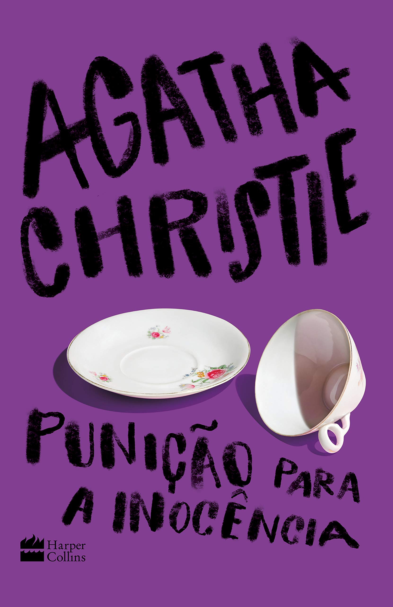
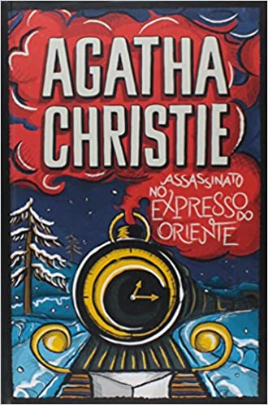
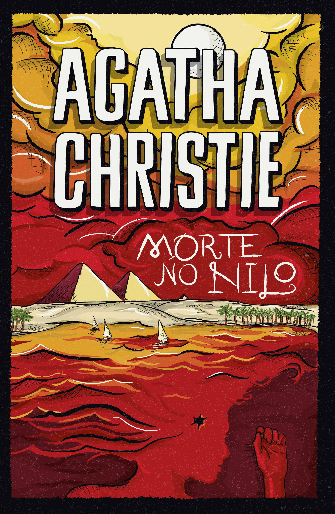
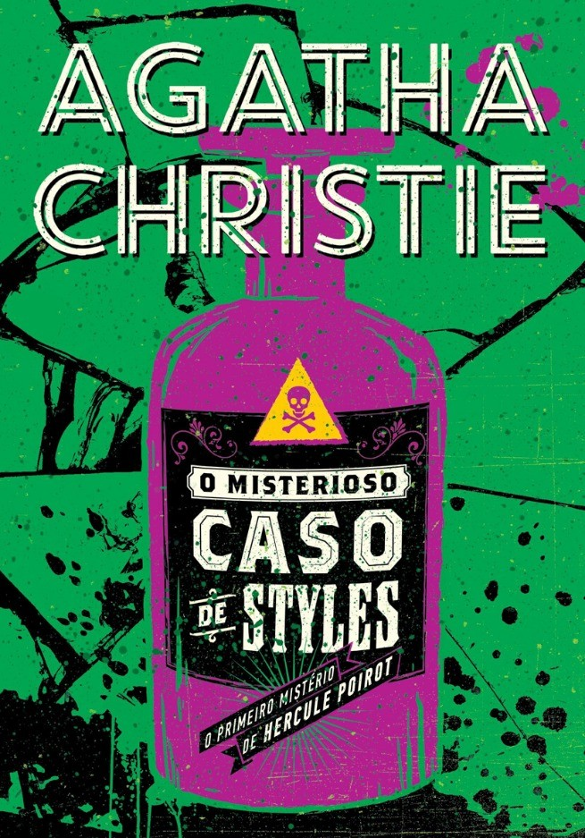
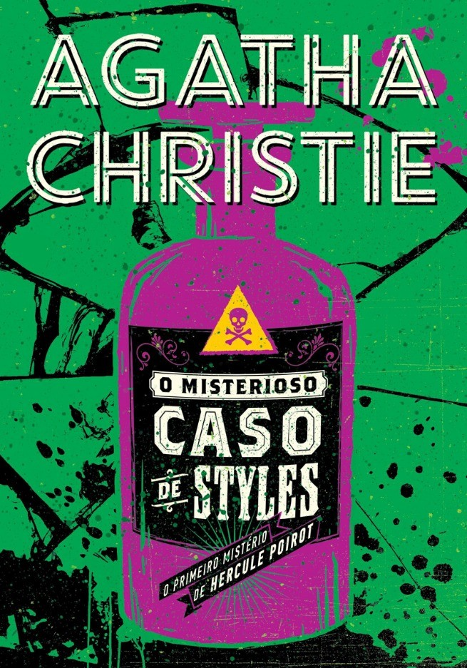

Agatha Christie
Sobre
Nascida Agatha Mary Clarissa Miller, em Torquay, 15 de setembro de 1890, ficou conhecida posteriormente como Agatha Christie.
Durante sua carreira publicou mais de 80 livros, alguns sob o pseudônimo de Mary Westmacott.
E ficou conhecida como "Rainha/Dama do Crime".
Segundo o Guiness Book, ela é a romancista mais bem sucedida da história popular mundial em número total de livros vendidos, perdendo apenas para a Bíblia e Shakespeare.
Obras mais famosas
   

Curiosidade
Em 3 de dezembro de 1926, Agatha Christie desapareceu, após seu marido ter pedido o divórcio. E seu carro foi encontrado em um barranco no lago Silent Pool em Newlands Corner, com os faróis acesos. Agatha ressurgiu 11 dias depois sem memória de tudo o que havia acontecido nesses 11 dias. Na busca por Agatha foi a primeira vez que se usou aviões para localizar alguém desaparecido na Inglaterra.
Na série Doctor Who, no episódio "The Unicorn and the Wasp", fala sobre esse desaparecimento dela e que foi por conta de um Vespa Gigante, sendo que Agatha abordou esse tema em alguns de seus livros, depois do seu desaparecimento. (a série é muita boa, assista! ;))